Panduan Website untuk Pengunjung
Panduan ini menjelaskan cara menggunakan setiap fitur dan halaman website Sahabat Insurance.
1. Gambaran Umum Website
Website Sahabat Insurance (sahabat-insurance.com) adalah portal resmi PT Asuransi Sahabat Artha Proteksi. Website ini menyediakan informasi produk asuransi, berita perusahaan, dokumen untuk nasabah, dan layanan informasi lainnya.
1.1 Halaman Utama (Beranda)
Halaman utama adalah pintu masuk utama website. Terdiri dari beberapa bagian yang dapat di-scroll dari atas ke bawah:

| Bagian | Deskripsi |
|---|---|
| Hero / Banner Utama | Gambar atau video hero dengan judul, subjudul, dan tombol CTA (mis. "Lihat Produk" atau "Hubungi Kami") |
| Promo Strip | Banner tipis di bawah hero yang menampilkan informasi promo atau pengumuman singkat |
| Produk | Grid kartu produk asuransi yang tersedia, bisa diklik untuk melihat detail |
| Mengapa Memilih Kami | Alasan & keunggulan perusahaan dengan ikon dan tombol CTA |
| Berita Terbaru | Kartu artikel berita terbaru yang dipublikasikan |
| CTA Banner | Banner besar di bagian bawah dengan informasi kontak dan cara memulai |
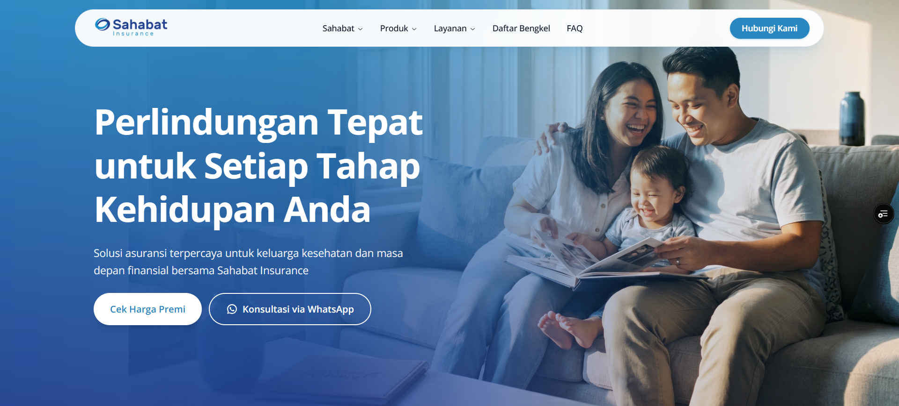
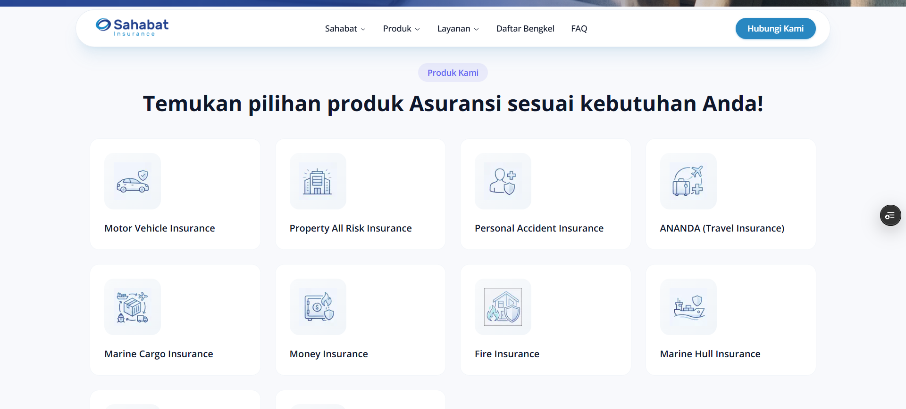
1.2 Navigasi & Menu
Navbar (menu atas) berada di bagian paling atas setiap halaman. Pada perangkat desktop, menu utama ditampilkan secara horizontal. Beberapa menu memiliki dropdown saat di-hover.
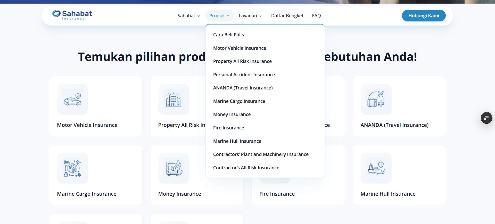
| Menu | Sub-menu / Tujuan |
|---|---|
| Produk | Daftar produk asuransi (Jiwa, Kesehatan, Kendaraan, dll.) |
| Layanan | Klaim, Dukungan Nasabah |
| Perusahaan | Profil, Visi & Misi, Manajemen, Kebijakan Privasi |
| Unduhan | Pusat Unduhan, Data & Tabel |
| Berita | Halaman daftar berita |
| Hubungi Kami | Halaman kontak |
2. Produk Asuransi
Halaman produk menampilkan semua produk asuransi yang ditawarkan oleh Sahabat Insurance. Setiap produk memiliki ikon, judul, dan deskripsi singkat.
2.1 Melihat Daftar Produk
Produk dapat dilihat langsung dari Beranda → Seksi Produk, atau melalui menu navigasi atas. Produk ditampilkan dalam format grid kartu.

Setiap kartu produk menampilkan:
- Ikon produk — gambar/SVG representasi produk
- Nama produk — judul singkat
- Deskripsi singkat — penjelasan produk
- Tombol Detail — untuk melihat informasi lengkap
2.2 Detail Produk
Klik kartu atau tombol detail untuk masuk ke halaman detail produk. Halaman ini memuat informasi lengkap produk, termasuk tautan ke dokumen Riplay dan formulir SPPA.
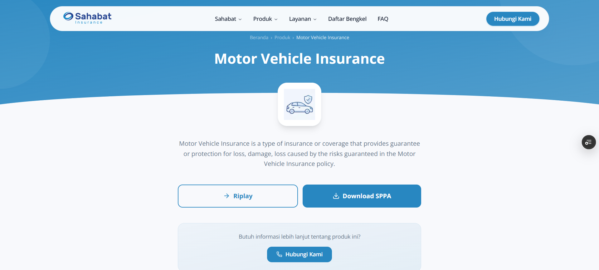
3. Berita & Artikel
3.1 Daftar Berita
Halaman /news menampilkan semua artikel berita yang telah dipublikasikan, diurutkan berdasarkan tanggal terbaru. Setiap artikel ditampilkan sebagai kartu dengan gambar unggulan, judul, ringkasan, tanggal, dan tag kategori.
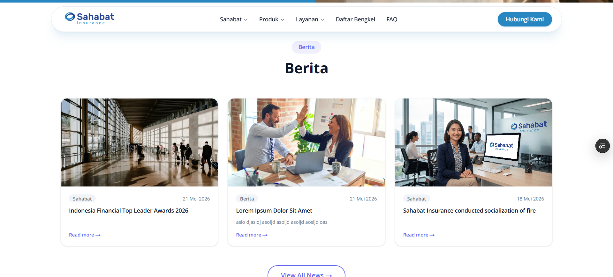
3.2 Membaca Artikel
Klik kartu berita untuk membuka halaman detail artikel. Artikel menampilkan gambar utama, judul, tanggal publikasi, tag, dan isi artikel lengkap dengan format teks kaya (rich text).
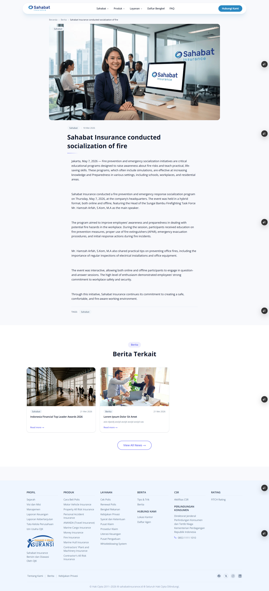
4. Kalkulator Premi (Cek Premi)
Halaman /cekpremi menyediakan alat bantu kalkulasi premi asuransi kendaraan secara online. Pengguna dapat mengisi data kendaraan untuk mendapatkan estimasi premi.
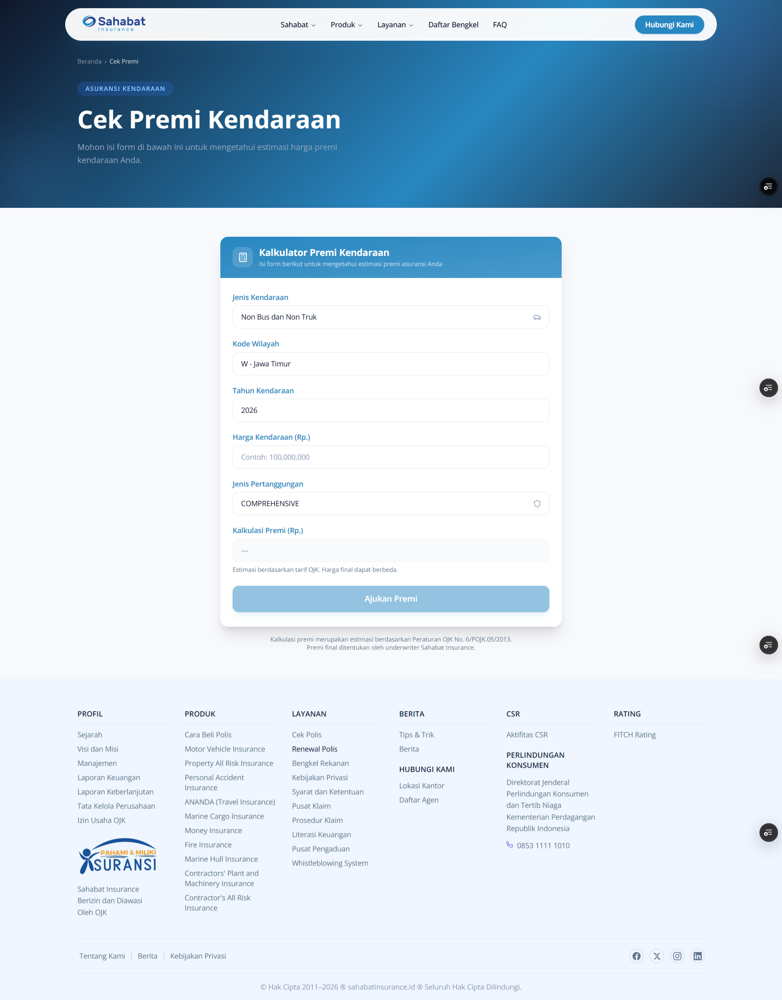
Akses /cekpremi dari menu navigasi atau langsung
dari browser.
Masukkan informasi seperti jenis kendaraan, tahun, merek, dan nilai kendaraan.
Sistem akan menampilkan estimasi premi berdasarkan data yang dimasukkan.
Jika tertarik, gunakan tombol atau informasi kontak untuk menghubungi agen Sahabat Insurance.
5. Pusat Unduhan (Download Center)
Halaman /unduhan adalah repositori dokumen resmi Sahabat Insurance. Di sini nasabah dan calon nasabah dapat mengunduh formulir, ketentuan produk, dan dokumen penting lainnya.
5.1 Melihat Daftar Dokumen
Halaman index unduhan menampilkan semua paket dokumen yang tersedia dalam bentuk kartu. Setiap paket memiliki judul dan deskripsi singkat.
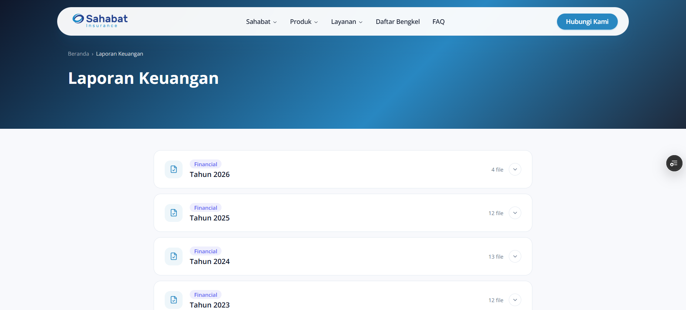
Klik kartu untuk masuk ke halaman detail paket unduhan, yang berisi daftar lengkap file yang dapat diunduh, dikelompokkan berdasarkan seksi/kategori.
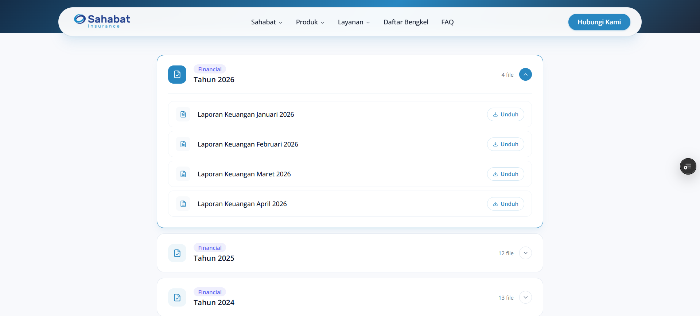
5.2 Mengunduh File
Setiap item dalam daftar unduhan ditampilkan dengan nama file, ukuran, dan tombol unduh. Klik nama file atau ikon unduh untuk memulai pengunduhan langsung.
5.3 Dokumen dengan Verifikasi Email
Beberapa paket unduhan memerlukan verifikasi email sebelum file dapat diakses. Ini adalah sistem email gate untuk keperluan registrasi data nasabah.
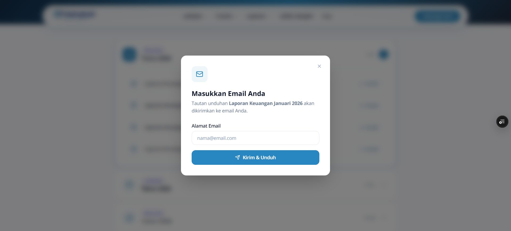
Klik kartu paket unduhan yang memerlukan verifikasi email.
Ketikkan alamat email aktif Anda pada kolom yang tersedia.
Klik tombol Kirim. Sistem akan mengirimkan link unduhan ke email Anda secara otomatis.
Buka kotak masuk email Anda, klik link yang dikirimkan untuk mengunduh dokumen.
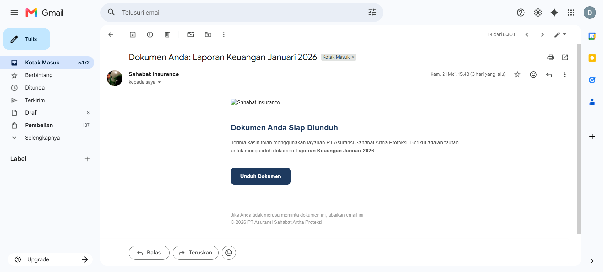
6. Data & Tabel Referensi
Halaman /tabel menyediakan data referensi dalam format tabel yang terstruktur. Ini berguna untuk nasabah yang membutuhkan informasi seperti tarif, ketentuan, atau data teknis lainnya.
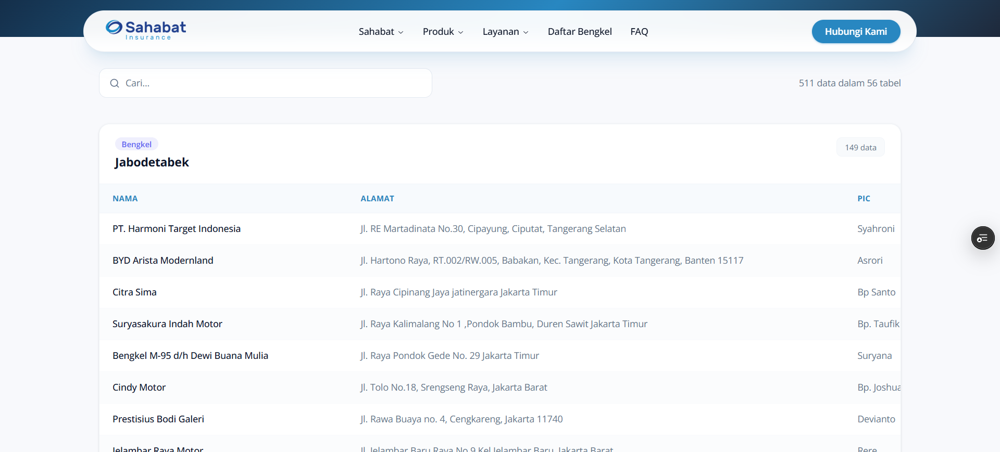
7. Visi & Misi Perusahaan
Halaman /vision-and-mission menampilkan visi, misi, dan nilai-nilai perusahaan PT Asuransi Sahabat Artha Proteksi.
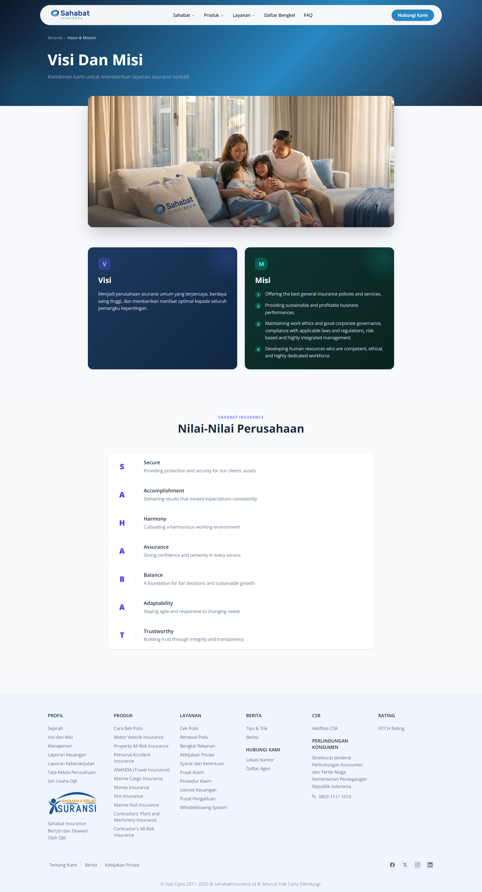
8. Halaman Manajemen
Halaman /management menampilkan profil kepemimpinan perusahaan, termasuk Dewan Komisaris dan Direksi.
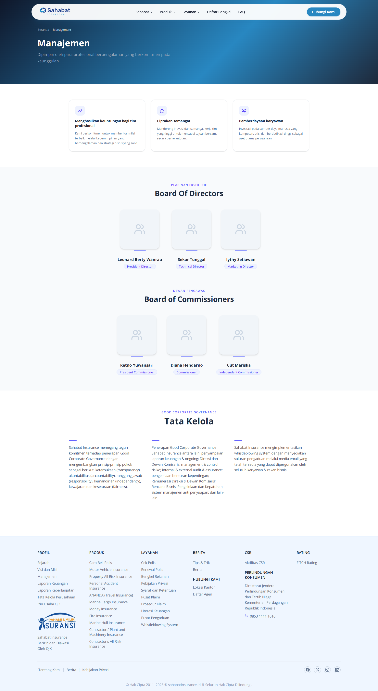
9. Hubungi Kami
Halaman /contact-us menyediakan berbagai saluran untuk menghubungi Sahabat Insurance, termasuk telepon, WhatsApp, email, dan formulir pengaduan.
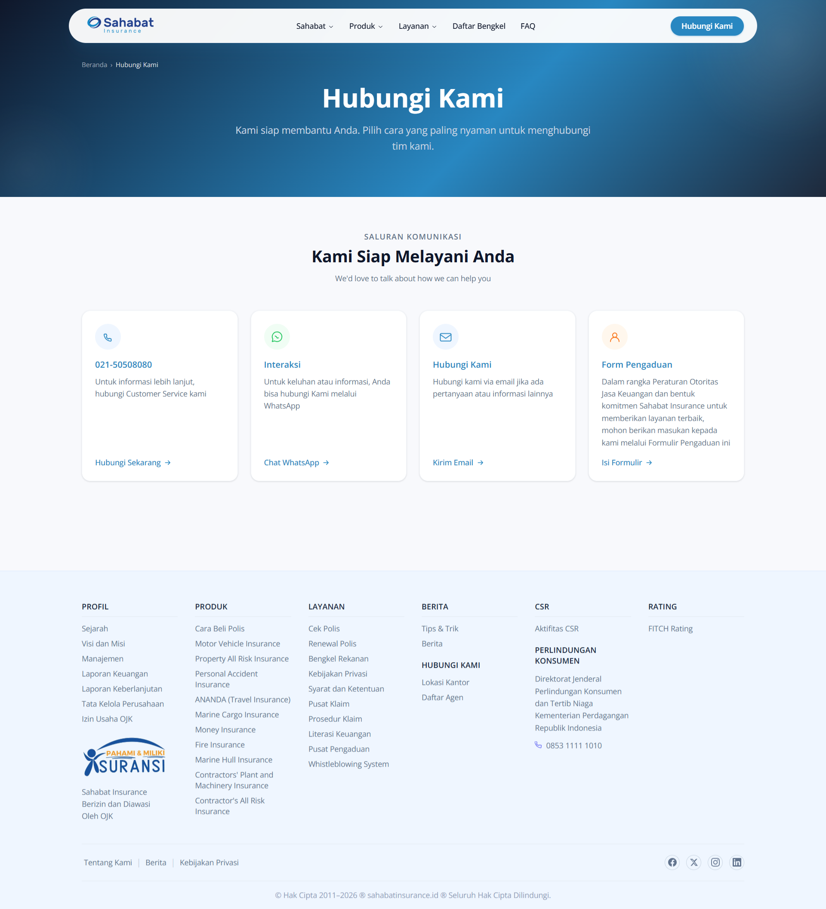
| Saluran | Cara Menggunakan |
|---|---|
| Telepon | Klik nomor telepon untuk memulai panggilan (di perangkat mobile) |
| Klik tombol WhatsApp untuk membuka percakapan langsung di WhatsApp | |
| Klik alamat email untuk membuka aplikasi email Anda | |
| Formulir Pengaduan | Klik tautan formulir untuk mengisi pengaduan atau pertanyaan secara tertulis |
Panduan Admin CMS
Panduan ini ditujukan untuk staf yang mengelola konten website melalui panel admin PayloadCMS.
10. Masuk ke Panel Admin
Panel admin dapat diakses melalui URL:
https://sahabat-insurance.com/admin
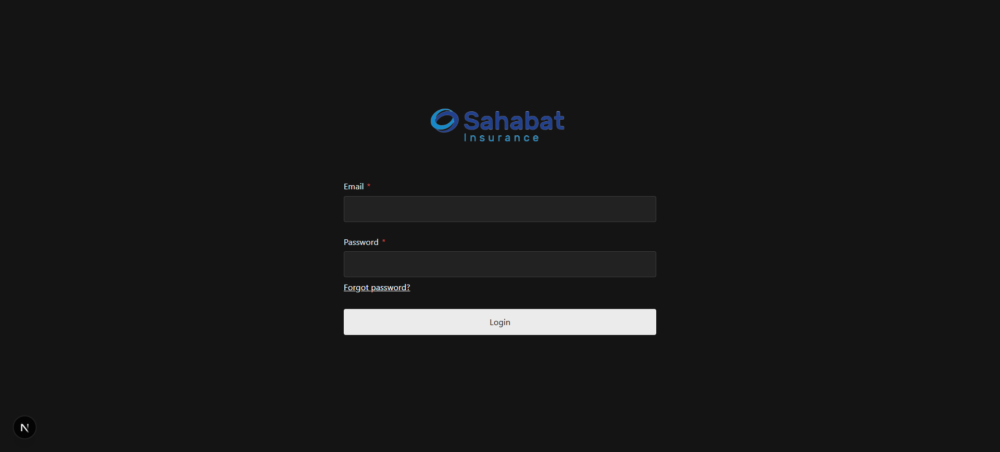
Akses /admin dari browser. Anda akan diarahkan ke
halaman login.
Masukkan alamat email dan kata sandi akun admin Anda.
Setelah berhasil, Anda akan diarahkan ke dashboard admin.
11. Dashboard & Navigasi Admin
Setelah login, Anda akan melihat dashboard admin PayloadCMS. Panel ini adalah pusat pengelolaan seluruh konten website.
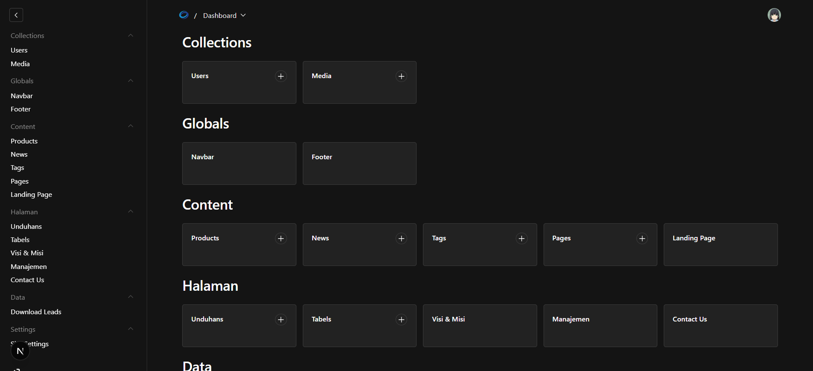
Navigasi Sidebar
Panel admin memiliki sidebar kiri yang berisi semua koleksi dan globals yang dapat dikelola.
12. Mengelola Produk
Klik Products di sidebar untuk membuka daftar produk asuransi. Produk yang ada di sini akan ditampilkan di bagian produk pada halaman utama website.
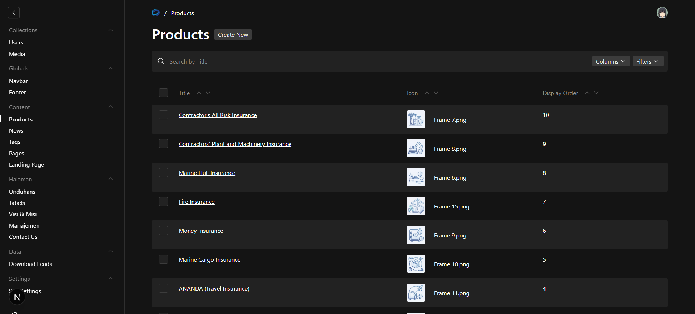
Tombol di pojok kanan atas daftar produk.
Lengkapi semua field yang tersedia (lihat tabel di bawah).
Klik tombol Save/Simpan. Produk akan langsung tampil di website.
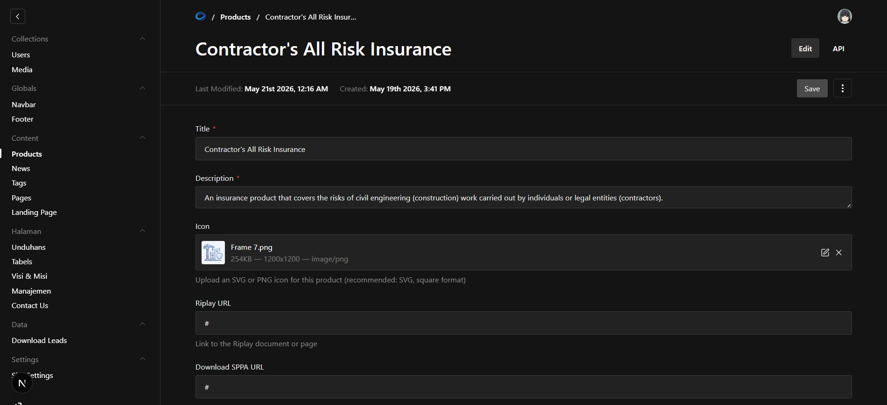
13. Mengelola Berita
Bagian News memungkinkan Anda membuat, mengedit, dan mempublikasikan artikel berita. Berita yang berstatus Published akan tampil di halaman berita website.
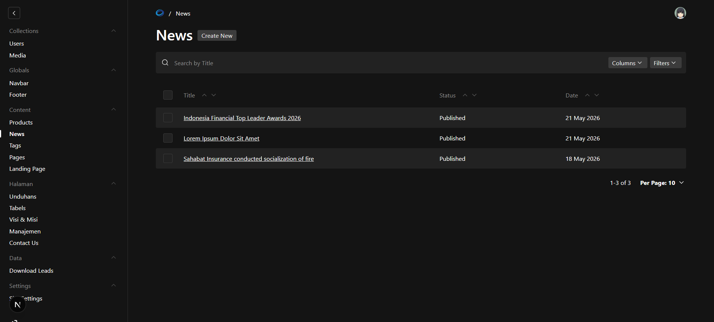
13.1 Membuat Berita Baru

13.2 Publikasi & Draft
Artikel dapat disimpan dalam status Draft saat masih dalam proses penulisan, dan dipublikasikan dengan mengubah status menjadi Published.
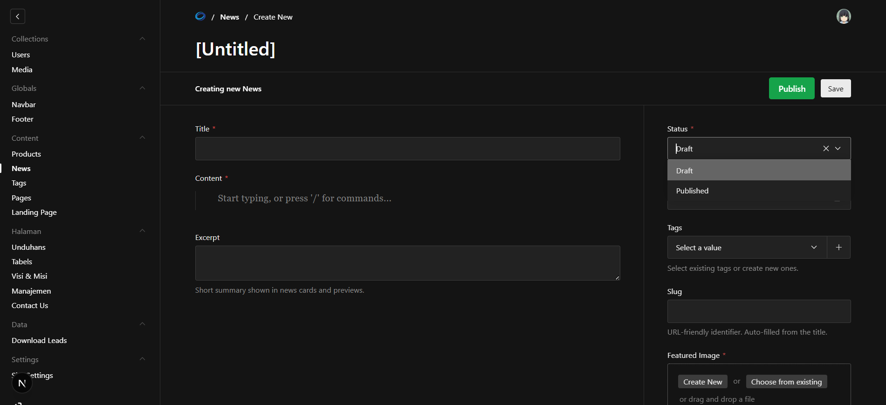
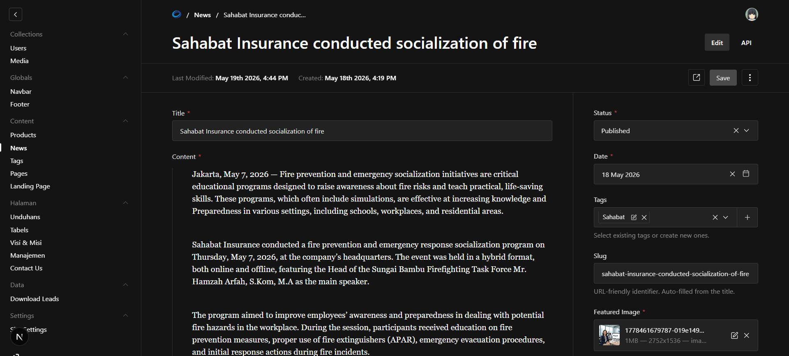
14. Mengelola Pusat Unduhan
Bagian Unduhan mengelola paket dokumen yang tersedia
di halaman /unduhan. Setiap entri adalah satu "paket"
yang bisa berisi banyak file/link, dikelompokkan dalam seksi.
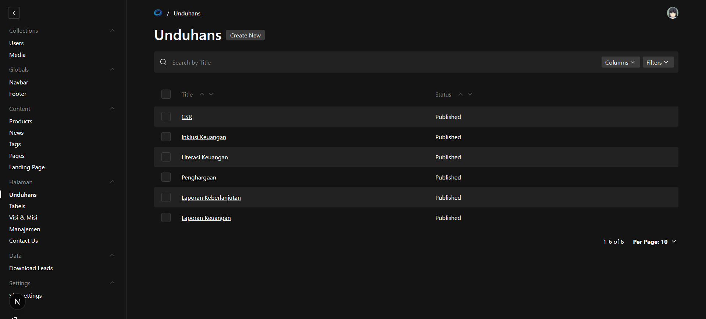
14.1 Membuat Paket Unduhan Baru
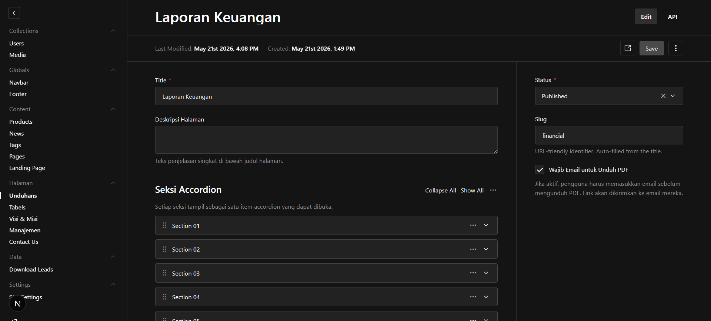
Struktur Seksi & Item
Setiap paket unduhan terdiri dari satu atau lebih Seksi. Setiap Seksi berisi:
Setiap Item dalam seksi berisi:
14.2 Mengatur Email Gate
Aktifkan Require Email Gate jika Anda ingin pengguna harus memasukkan email sebelum mengunduh file dalam paket ini. Data email akan tersimpan di koleksi Download Leads.
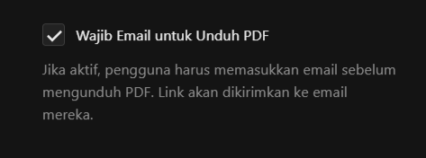
15. Mengelola Tabel Data
Bagian Tabel mengelola konten halaman
/tabel. Setiap entri adalah halaman tabel yang bisa
memuat beberapa tabel data.
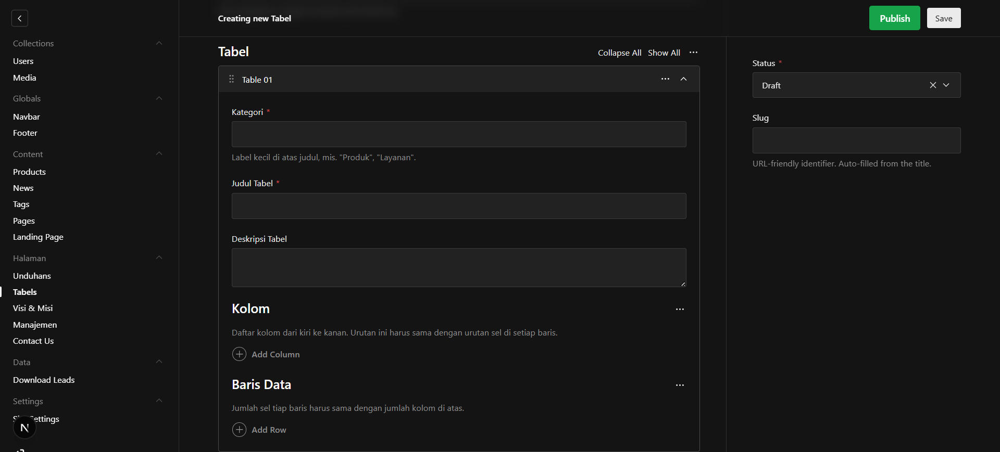
cells) sama
dengan jumlah kolom yang didefinisikan. Ketidakcocokan jumlah akan
menyebabkan tampilan tabel tidak rapi.
16. Mengelola Halaman Statis
Koleksi Pages memungkinkan Anda membuat halaman
statis kustom dengan konten fleksibel. Halaman ini dapat diakses via
URL /[slug].
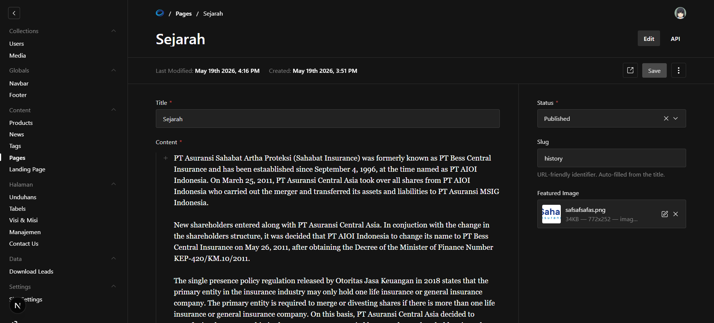
17. Pengaturan Global Website
Globals adalah pengaturan satu-instance yang mengontrol konten berbagai bagian website. Perubahan pada globals langsung berdampak pada tampilan website.
17.1 Landing Page (Halaman Utama)
Global ini mengontrol semua konten di halaman utama website, dibagi ke dalam beberapa tab:
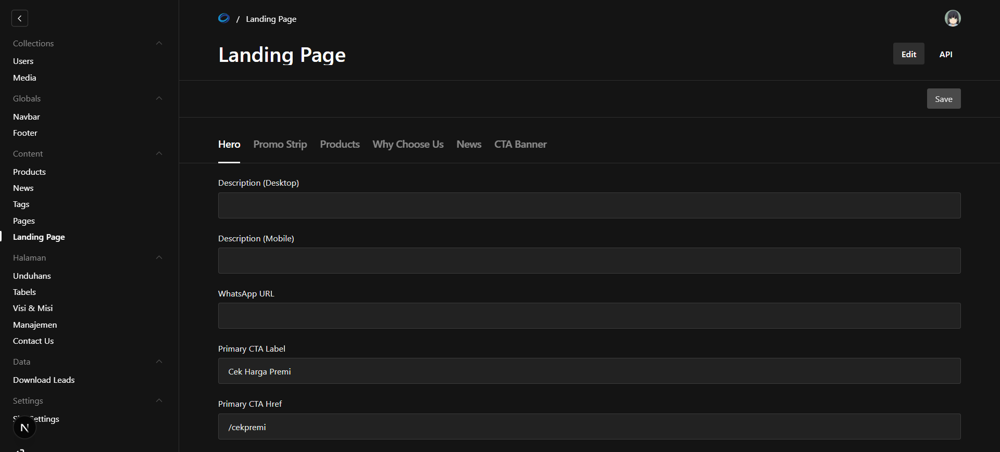
17.2 Navbar Config (Menu Navigasi)
Global ini mengontrol isi menu navigasi di bagian atas website.
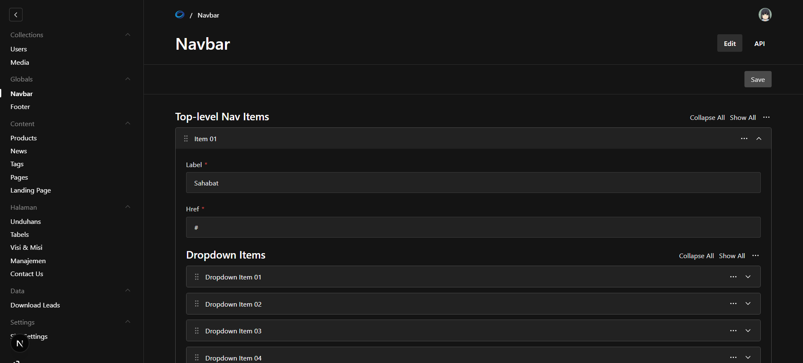
Struktur menu navigasi:
- items[] — daftar item menu utama (top-level)
-
Setiap item:
label(teks),href(URL) -
Item dengan dropdown: tambahkan
dropdownItems[]yang berisititle,description,href -
Dropdown bisa memiliki sub-item lagi melalui
subItems[]
17.3 Footer Config
Mengontrol konten footer website, terbagi menjadi Upper Footer dan Lower Footer.
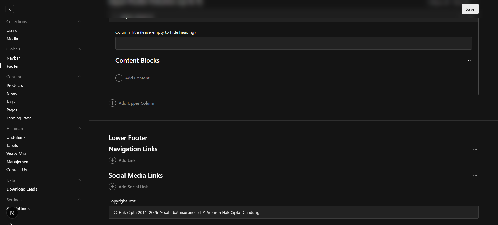
17.4 Visi & Misi
Mengontrol seluruh konten halaman /vision-and-mission.
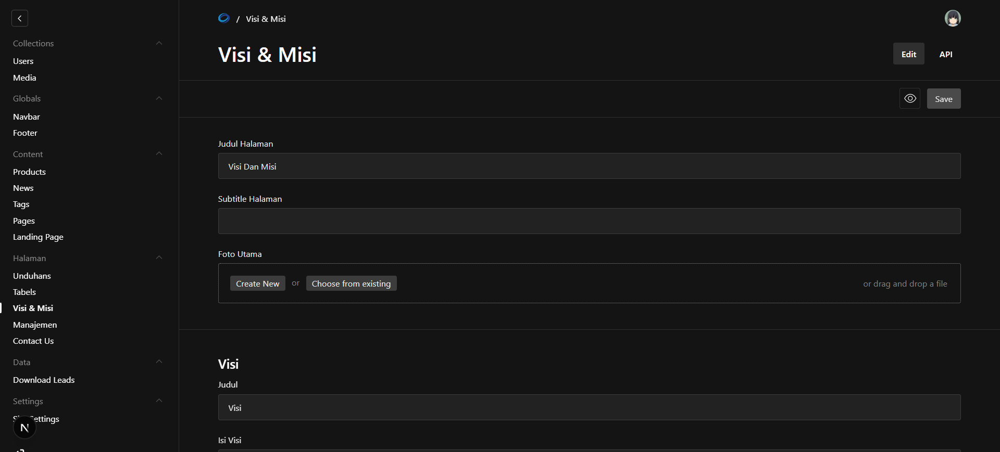
letter,
title, description
17.5 Manajemen
Mengontrol seluruh konten halaman /management.
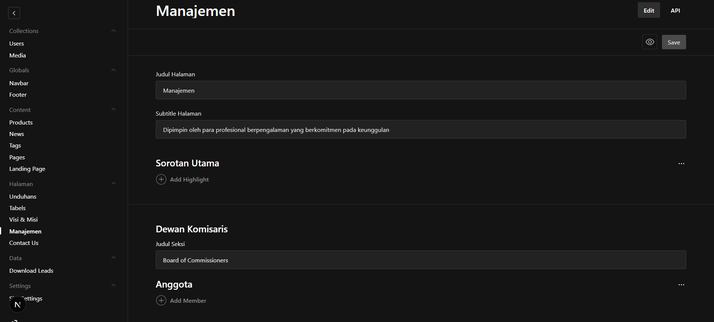
17.6 Hubungi Kami
Mengontrol konten halaman /contact-us.
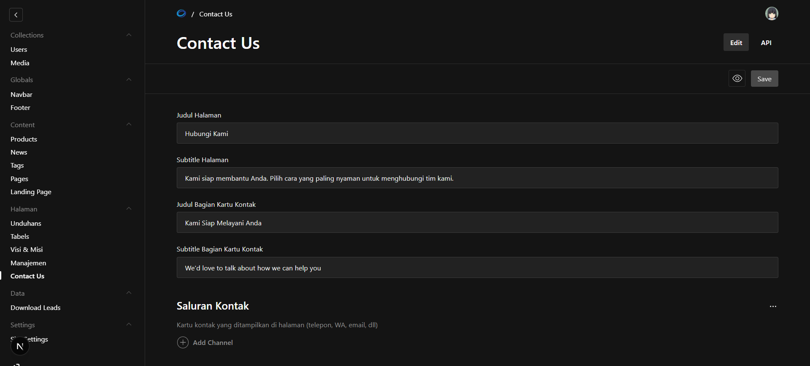
17.7 Site Settings (Pengaturan Situs)
Pengaturan dasar situs, saat ini digunakan untuk mengelola Favicon (ikon tab browser).
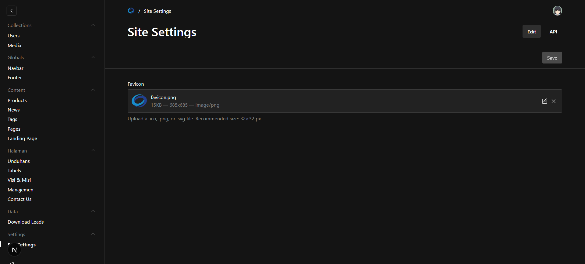
Klik Site Settings di bagian Globals pada sidebar admin.
Klik area upload favicon dan pilih file. Gunakan format ICO, PNG, atau SVG berukuran 32x32 atau 64x64 px.
Klik Save. Favicon baru akan aktif setelah website di-deploy ulang atau cache browser dikosongkan.
18. Manajemen Media
Koleksi Media adalah pustaka aset terpusat. Semua file gambar dan dokumen yang digunakan di website dikelola di sini. File disimpan di Vercel Blob Storage.
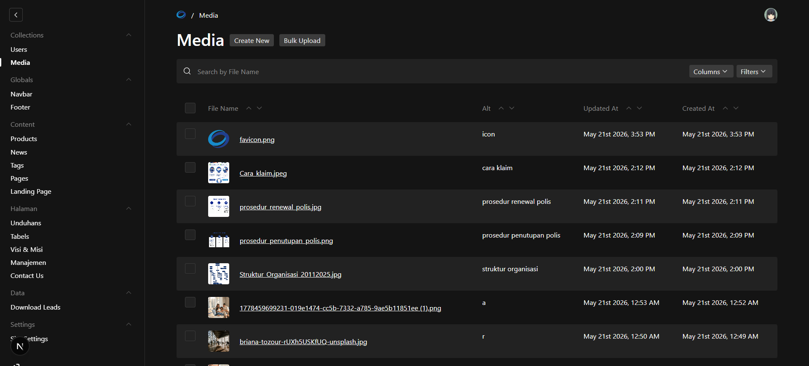
Klik Media di sidebar admin untuk membuka pustaka aset.
Tombol di pojok kanan atas.
Drag & drop file ke area upload, atau klik untuk memilih file dari komputer.
Wajib mengisi field alt (teks alternatif) untuk
aksesibilitas.
File tersimpan di cloud storage dan dapat digunakan di field media mana pun.
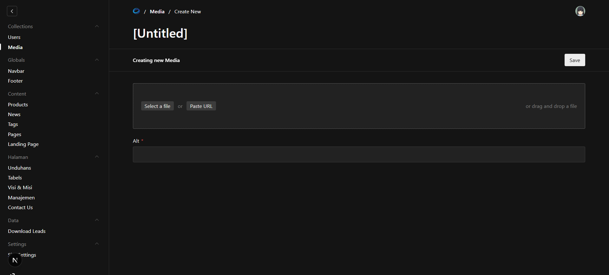
19. Data Lead Unduhan
Koleksi Download Leads secara otomatis merekam data email pengguna yang mengunduh dokumen melalui email gate. Data ini berguna untuk keperluan marketing.
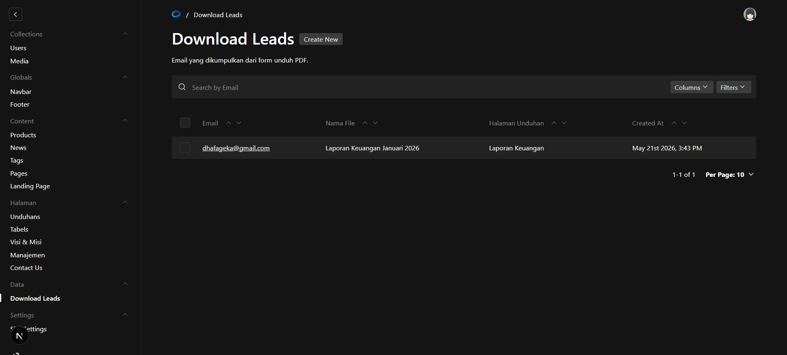
20. Manajemen Pengguna Admin
Koleksi Users mengelola akun-akun yang memiliki akses ke panel admin.
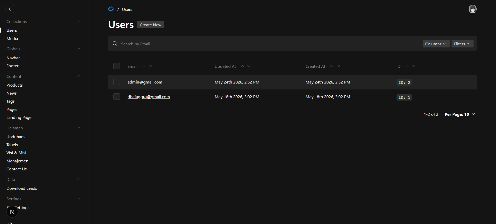
Klik Users di sidebar admin.
Gunakan email aktif dan password yang kuat (minimal 8 karakter, kombinasi huruf & angka).
Simpan akun, lalu informasikan kredensial kepada pengguna baru melalui saluran yang aman.